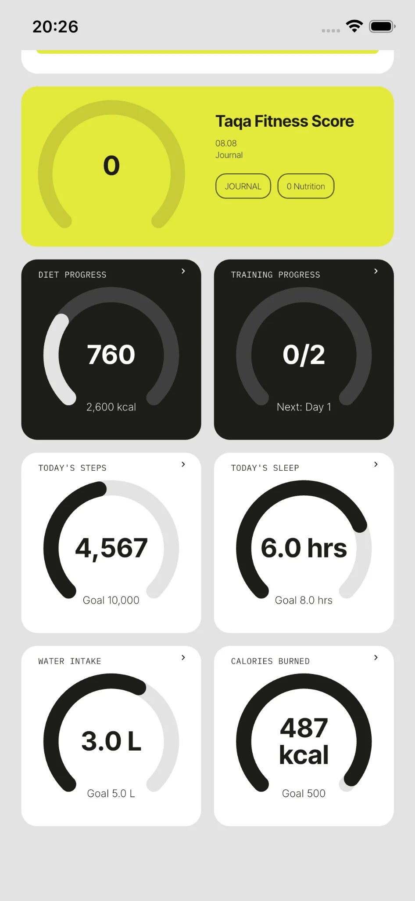
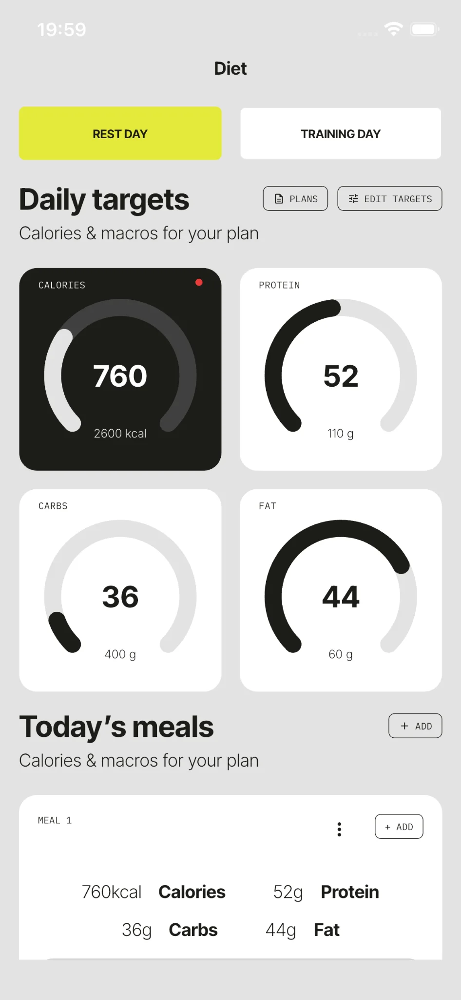
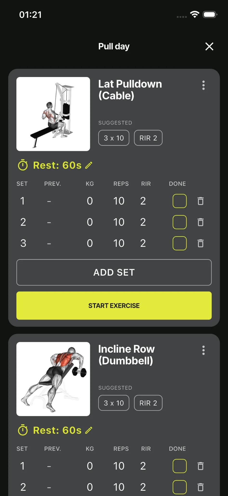

Taqa FitnessiOS / Android
01Mobile product
Taqa Fitness
Production fitness application shipped across iOS and Android, combining training, nutrition, recovery tracking and connected health data.
- MobileFlutter application and product flows
- BackendFastAPI + PostgreSQL
- HealthApple Health & Google Health integrations
- ReleaseSubscriptions, deployment and store launch